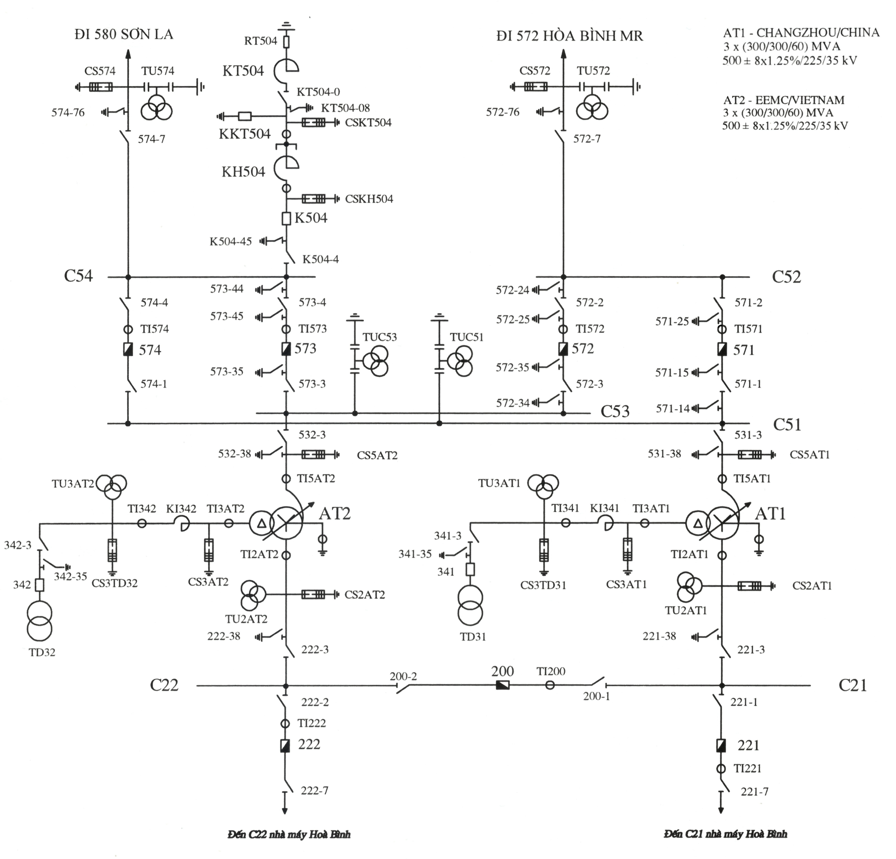

1. THAO TÁC CẮT MBA RA SỬA CHỮA:
1. Kiểm tra trào lưu công suất, huy động nguồn hoặc thay đổi kết lưới thích hợp, tránh quá tải các máy biến áp khác hoặc các đường dây liên quan;
2. Chuyển nguồn tự dùng nếu nguồn điện tự dùng lấy qua máy biến áp đó;
3. Khóa mạch tự động điều chỉnh điện áp dưới tải (nếu đang để tự động)
4. Cắt máy cắt các phía hạ áp, trung áp, cao áp máy biến áp theo nguyên tắc bảo đảm an toàn cho máy biến áp (tránh quá áp) và lưới điện (tránh điện áp thấp);
5. Kiểm tra máy biến áp không còn điện áp;
6. Cắt các dao cách ly liên quan cần thiết phía hạ áp, trung áp, cao áp máy biến áp theo trình tự thuận tiện cho thao tác;
7. Đóng dao tiếp địa cố định phía hạ áp, trung áp, cao áp máy biến áp;
8. Cắt áp tô mát các TU của máy biến áp (nếu có);
9. Đơn vị quản lý vận hành làm các biện pháp an toàn, treo biển báo theo quy định về an toàn điện;
10. Giao máy biến áp cho đơn vị quản lý vận hành, đơn vị công tác đồng thời nhắc nhở, lưu ý thêm về các biện pháp an toàn.
- Chú ý: nếu có đóng ‘Khép vòng Máy cắt’ thì thực hiện sau bước 7 (đóng dao tiếp địa) hay trước bước cắt AB TU
2. THAO TÁC ĐÓNG ĐIỆN MBA VÀO VẬN HÀNH SAU SỬA CHỮA
1. Đơn vị quản lý vận hành, đơn vị công tác có trách nhiệm khẳng định máy biến áp đủ tiêu chuẩn vận hành trong thông báo trả máy biến áp sau công tác cho các đơn vị đã giao máy biến áp. Nội dung bàn giao như sau: “Đã kết thúc công tác trên máy biến áp, người và phương tiện sửa chữa đã rút hết, đã tháo hết các tiếp địa di động trên máy biến áp, máy biến áp đủ tiêu chuẩn vận hành và sẵn sàng đóng điện”;
2. Đóng áp tô mát các TU của máy biến áp (nếu có);
3. Cắt hết các dao tiếp địa cố định các phía của máy biến áp;
4. Kiểm tra hệ thống rơ le bảo vệ, làm mát, chữa cháy (nếu có) của máy biến áp đã đưa vào vận hành;
5. Đặt nấc phân áp ở vị trí thích hợp, tránh quá điện áp máy biến áp khi đóng điện;
6. Đóng các dao cách ly liên quan phía hạ áp, trung áp, cao áp máy biến áp;
7. Đóng máy cắt phía có điện để đóng điện máy biến áp, kiểm tra điện áp máy biến áp; sau đó lần lượt đóng máy cắt các phía còn lại, lưu ý điều kiện khép vòng hoặc hoà điện nếu các phía còn lại có điện;
8. Chuyển đổi nguồn tự dùng (nếu cần);
9. Sau khi đưa máy biến áp vào vận hành, nhân viên vận hành phải kiểm tra tình trạng vận hành của máy biến áp. Căn cứ chế độ vận hành, có thể đưa chế độ tự động điều chỉnh nấc phân áp máy biến áp vào làm việc.
3. THAO TÁC CẮT ĐIỆN ĐƯỜNG DÂY
1. Kiểm tra trào lưu công suất, điện áp của hệ thống trước khi thao tác. Điều chỉnh công suất, điện áp, chuyển phụ tải các trạm điện nhận điện từ đường dây này;
2. Lần lượt cắt tất cả các máy cắt các đầu đường dây hoặc nhánh rẽ theo trình tự phía xa nguồn điện trước, phía gần nguồn điện sau;
3. Lần lượt cắt các dao cách ly các đầu đường dây, nhánh rẽ;
4. Đóng dao tiếp địa các đầu đường dây, nhánh rẽ;
5. Cắt áp tô mát các máy biến điện áp của đường dây (nếu có);
6. Đơn vị điều độ bàn giao đường dây cho Đơn vị quản lý vận hành. Đơn vị quản lý vận hành tự thực hiện các biện pháp an toàn, treo biển báo theo quy định về an toàn điện.
THAO TÁC ĐÓNG ĐIỆN ĐƯỜNG DÂY
Thao tác đóng điện đường dây thực hiện theo trình tự sau:
1. Đơn vị quản lý vận hành có trách nhiệm thông báo cho cấp điều độ có quyền điều khiển về việc xác nhận tình trạng và giao trả đường dây để đưa vào vận hành. Nội dung bàn giao như sau: “Đã kết thúc công tác trên đường dây, người và phương tiện đã rút hết, đã tháo hết tiếp địa di động trên đường dây, đường dây đủ tiêu chuẩn vận hành và sẵn sàng đóng điện”;
2. Đóng áp tô mát các máy biến điện áp của đường dây (nếu có);
3. Cắt tất cả các dao tiếp địa các đầu đường dây, nhánh rẽ;
4. Lần lượt đóng các dao cách ly các đầu đường dây, nhánh rẽ;
5. Lần lượt đóng các máy cắt các đầu đường dây, nhánh rẽ theo trình tự sau:
a) Đối với đường dây hình tia chỉ một đầu có điện: Đóng điện đầu có điện trước;
b) Đối với đường dây mạch vòng các đầu đều có điện: Đóng điện đầu xa nhà máy điện trước, khép vòng hoặc hòa đồng bộ đầu gần nhà máy điện sau. Nếu có khả năng xảy ra quá điện áp cuối đường dây, đóng điện đầu có điện áp thấp hơn trước, khép vòng hoặc hòa đồng bộ đầu kia sau.
6. Kiểm tra, điều chỉnh lại công suất, điện áp, chuyển phụ tải phù hợp sau khi đưa đường dây vào vận hành
4. Trình tự thao tác dao cách ly hai phía máy cắt như sau:
a) Trường hợp một phía máy cắt có điện áp, một phía không có điện áp
( U1 > , U2 = 0 )
MC thường gắn với DCL 2 phía
- MC cắt trước DCL ( DCL cắt sau MC)
- MC đóng sau DCL ( DCL đóng trước MC)
- Khi thao tác mở dao cách ly: Mở dao cách ly phía không có điện áp trước, mở dao cách ly phía có điện áp sau; ( DCL -2 cắt trước ( cắt ko điện) )
- Khi thao tác đóng dao cách ly: Đóng dao cách ly phía có điện áp trước, đóng dao cách ly phía không có điện áp sau. ( DCL - 1 đóng trước ( đóng đẳng áp) )
- ƯU TIÊN ĐÓNG ĐẲNG ÁP TRƯỚC ( ĐÓNG CÓ ĐIỆN)
- ƯU TIÊN CẮT KHÔNG ĐIỆN TRƯỚC
b) Trường hợp hai phía máy cắt đều có điện áp
( U1 > , U2 > 0 )
- Khi thao tác mở dao cách ly: Mở dao cách ly phía nếu có sự cố xảy ra ít ảnh hưởng đến chế độ vận hành của hệ thống điện trước, mở dao cách ly kia sau; ( mở DCL phía ít sự cố ảnh hưởng hơn)
- Khi thao tác đóng dao cách ly: Đóng dao cách ly phía nếu có sự cố xảy ra ảnh hưởng nhiều đến chế độ vận hành của hệ thống điện trước, đóng dao cách ly kia sau.( đóng DCL phía ảnh hưởng lớn trước)
4. Thao tác tại chỗ dao cách ly phải thực hiện nhanh chóng và dứt khoát, nhưng không được gây hư hỏng dao cách ly. Nghiêm cấm cắt (hoặc đóng) lưỡi dao trở lại khi thấy xuất hiện hồ quang trong quá trình đóng (hoặc cắt) dao cách ly.
5. Ngay sau khi kết thúc thao tác, dao cách ly cần được kiểm tra vị trí các lưỡi dao đã đóng cắt hết hành trình hoặc tiếp xúc tốt trừ trường hợp thao tác xa đối với trạm điện, nhà máy điện không người trực vận hành.
PHẦN 2 : XỬ LÝ PHÁT NHIỆT
Xử lý phát nhiệt dao cách ly ( phải cắt được dao cách ly)
Chia ra 3 trường hợp: phát nhiệt 1 má trái, 1 má phải, phát nhiệt cả 2 má
Nguyên tắc: tách ít thiết bị nhất. ( lưu ý điều kiện khép vòng)

I. DCL 221-7
1. Xử lý phát nhiệt DCL 221-7 phía đường dây:
Phân tích: phải tách đường dây 221-7
1. Cắt MC 221
2. cắt DCL 221-1
3. Cắt DCL 221-7
4. Phối hợp với nhà máy tách đoạn đz từ 221-7 xuống nhà máy
5. làm tiếp địa di động chống cảm ứng khi làm việc
2. Xử lý phát nhiệt DCL 221-7 phía máy cắt:
Phân tích: phải tách máy cắt
1. Cắt MC 221
2. cắt DCL 221-1
3. Cắt DCL 221-7
( chú ý dao cách lý phía TC có điện khi làm việc)
4. làm tiếp địa di động chống cảm ứng khi làm việc
3. Xử lý phát nhiệt DCL 221-7 cả 2 má dao:
Phân tích: phải tách đường dây 221-7 và máy cắt 221
1. Cắt MC 221
2. cắt DCL 221-1
3. Cắt DCL 221-7
4. Phối hợp với nhà máy tách đoạn đz từ 221-7 xuống nhà máy
5. làm tiếp địa di động chống cảm ứng khi làm việc
II. DCL 221-1
1. Xử lý phát nhiệt DCL 221-1 phía máy cắt
Phân tích: phải tách MC 221
1. Cắt MC 221
2. cắt DCL 221-1
3. Cắt DCL 221-7
4. làm tiếp địa di động chống cảm ứng khi làm việc
2. Xử lý phát nhiệt DCL 221-1 phía thanh cái:
Phân tích: phải tách thanh cái C21
1. Cắt MC 200
2. Cắt MC 221
3. Cắt DCL 200-1
4. Cắt DCL 200-2
5. Cắt DCL 221-1
6. Cắt DCL 221-7
7. Cắt DCL 221-3
8. làm tiếp địa di động chống cảm ứng khi làm việc
3. Xử lý phát nhiệt DCL 221-1 cả 2 má dao ( Giống DCL 221-1 phía thanh cái)
III. DCL 221-3
1. Xử lý phát nhiệt DCL 221-3 phía thanh cái
Phân tích: phải tách thanh cái C21
1. Cắt MC 200
2. Cắt MC 221
3. Cắt DCL 200-1
4. Cắt DCL 200-2
5. Cắt DCL 221-1
6. Cắt DCL 221-7
7. Cắt DCL 221-3
8. làm tiếp địa di động chống cảm ứng khi làm việc
2. Xử lý phát nhiệt DCL 221-3 phía máy biến áp:
Phân tích: phải tách máy biến áp và khép vòng phía 500 và cả phía 220
1. Cắt MC 341, MC 571, MC574, MC 200, MC221
2. Cắt DCL: 341-3, 531-3, 221-3
3. Khép vòng: Đóng MC 200, 221, 571, 574.
4. Đóng tiếp địa 221-38 trước khi làm việc
3. Xử lý phát nhiệt DCL 221-3 cả 2 má :
Phân tích: phải tách máy biến áp và cả thanh cái C21 ( Tách MBA + MC200, MC221) , TH này khép vòng phía 500.
1. Cắt MC 341, MC 571, MC574, MC 200, MC221
2. Cắt DCL: 341-3, 531-3, 221-3, 200-1, 200-2, 221-1, 221-7
3. Khép vòng: Đóng MC 571, 574.
4. Đóng tiếp địa 221-38 và di động trước khi làm việc
IV. DCL 200-1
1. Xử lý phát nhiệt DCL 200-1 phía thanh cái ( giống 221-1 phía thanh cái)
Phân tích: phải tách thanh cái C21
1. Cắt MC 200
2. Cắt MC 221
3. Cắt DCL 200-1
4. Cắt DCL 200-2
5. Cắt DCL 221-1
6. Cắt DCL 221-7
7. Cắt DCL 221-3
8. làm tiếp địa di động chống cảm ứng khi làm việc
2. Xử lý phát nhiệt DCL 200-1 phía MC 200.
Phân tích: phải tách MC 200 và dao cách ly 2 phía.
1. Cắt MC 200
2. Cắt DCL 200-1
3. Cắt DCL 200-2
4. Làm tiếp địa di động chống cảm ứng khi làm việc
3. Xử lý phát nhiệt DCL 200-1 cả 2 má dao.
Phân tích: phải tách thanh cái C21
1. Cắt MC 200
2. Cắt MC 221
3. Cắt DCL 200-1
4. Cắt DCL 200-2
5. Cắt DCL 221-1
6. Cắt DCL 221-7
7. Cắt DCL 221-3
8. làm tiếp địa di động chống cảm ứng khi làm việc
V. DCL 531-3
1. Xử lý phát nhiệt DCL 531-3 phía thanh cái C51
Phân tích: phải tách thanh cái C51.
1. Cắt MC 571, MC 574.
2. Cắt DCL 571-1, 571-2, 574-1, 574-4, 531-3
3. Đóng DTĐ 571-14
2. Xử lý phát nhiệt DCL 531-3 phía máy biến áp AT1
Phân tích: phải tách AT1 và khép vòng 2 phía 500 và 220.
1. Cắt MC 341, MC 571, MC574, MC 200, MC221
2. Cắt DCL: 341-3, 531-3, 221-3
3. Khép vòng: Đóng MC 200, 221, 571, 574.
4. Đóng tiếp địa 531-38 trước khi làm việc
3. Xử lý phát nhiệt DCL 531-3 cả 2 má dao
Phân tích: phải tách AT1 và Thanh cái C51, sau đó khép vòng phía 220.
1. Cắt MC 341, MC 571, MC574, MC 200, MC221
2. Cắt DCL: 341-3, 531-3, 221-3, 571-1, 571-2, 574-1, 574-4
3. Khép vòng: Đóng MC 200, 221.
4. Đóng tiếp địa 531-38 và 571-14 trước khi làm việc
VI. DCL 571-1
1. Xử lý phát nhiệt DCL 571-1 phía thanh cái C51
Phân tích: phải tách Thanh cái C51
1. Cắt MC 571, MC574
2. Cắt DCL: 571-1, 571-2, 574-1, 574-4, 531-3.
3. Đóng tiếp địa 571-14 trước khi làm việc
2. Xử lý phát nhiệt DCL 571-1 phía máy cắt.
Phân tích: phải tách máy cắt 571 và dao cách ly 2 phía.
1. Cắt MC 571
2. Cắt DCL: 571-1, 571-2
3. Đóng tiếp địa 571-15 trước khi làm việc
3. Xử lý phát nhiệt DCL 571-1 cả 2 má dao
Phân tích: phải tách Thanh cái C51
1. Cắt MC 571, MC574
2. Cắt DCL: 571-1, 571-2, 574-1, 574-4, 531-3.
3. Đóng tiếp địa 571-14, 571-15 trước khi làm việc
VII. DCL 571-2
1. Xử lý phát nhiệt DCL 571-2 về phía máy cắt
Phân tích: phải tách máy cắt 571 và dao cách ly 2 phía.
1. Cắt MC 571
2. Cắt DCL: 571-1, 571-2
3. Đóng tiếp địa di động 571-25 trước khi làm việc ( chú ý má kia có điện)
2. Xử lý phát nhiệt DCL 571-2 phía thanh cái C52.
Phân tích: phải tách máy đường dây 572.
1. Cắt MC 571
2. Cắt MC 572
3. Cắt DCL 572-7
4. Phối hợp tách đầu đối diện
5. Đóng Tiếp địa di động 572-24, và DTĐ 572-76
3. Xử lý phát nhiệt DCL 571-2 cả 2 má .
Phân tích: phải tách máy đường dây 572.
1. Cắt MC 571
2. Cắt MC 572
3. Cắt DCL 572-7
4. Phối hợp tách đầu đối diện
5. Đóng Tiếp địa di động 572-24, và DTĐ 572-76
VIII. DCL 572-7
1. Xử lý phát nhiệt DCL 572-7 về phía thanh cái C52.
Phân tích: phải tách thanh cái C52 và đường dây 572
1. Cắt MC 571
2. Cắt MC 572
3. Cắt DCL 571-2, 571-1, 572-2, 572-3, 572-7
4. Đóng tiếp địa 572-24
2. Xử lý phát nhiệt DCL 572-7 về phía đường dây.
Phân tích: phải tách đường dây 572 sau đó đóng khép vòng 571, 572
1. Cắt MC 571
2. Cắt MC 572
3. Cắt DCL 572-7
4. Phối hợp tách đầu đối diện
5. Đóng tiếp địa 572-76
6. Đóng khép vòng MC 571, MC 572
3. Xử lý phát nhiệt DCL 572-7 cả 2 má.
Phân tích: phải tách đường dây 572 và cả TC C52.
1. Cắt MC 571
2. Cắt MC 572
3. Cắt DCL 571-2, 571-1, 572-2, 572-3, 572-7
4. Phối hợp tách đầu đối diện
5. Đóng tiếp địa 572-24, 572-76
IX. DCL 572-2 ( giống 571-2)
X. DCL 572-3
1. Xử lý phát nhiệt DCL 572-3 về phía máy cắt.
Phân tích: phải tách MC 572 và DCL 2 phía.
1. Cắt MC 572
2. Cắt DCL 572-2
3. Cắt DCL 572-3
4. Đóng tiếp địa 572-35
2. Xử lý phát nhiệt DCL 572-3 về thanh cái C53.
Phân tích: phải tách thanh cái C53.
1. Cắt MC 572, MC573
2. Cắt DCL: 572-2, 572-3, 573-3, 573-4, 532-3.
3. Đóng tiếp địa 572-34 trước khi làm việc
3. Xử lý phát nhiệt DCL 572-3 cả 2 má.
Phân tích: phải tách thanh cái C53.
1. Cắt MC 572, MC573
2. Cắt DCL: 572-2, 572-3, 573-3, 573-4, 532-3.
3. Đóng tiếp địa 572-34, 572-35 trước khi làm việc
XI. DCL 222-7 giống DCL 221-7
XII. DCL 222-2 giống DCL 222-1
XII. DCL 222-3 giống DCL 221-3
XIII. DCL 532-3 giống DCL 531-3
XIV. DCL 574-1 giống DCL 571-1
XV. DCL 574-4 giống DCL 571-2
XVI. DCL 574-7 giống DCL 572-7
PHẦN 3 : HƯỚNG DẪN THỰC HIỆN MẪU PHIẾU THAO TÁC
HƯỚNG DẪN THỰC HIỆN MẪU PHIẾU THAO TÁC
(Ban hành kèm theo Thông tư số 06/2025/TT-BCT ngày 01 tháng 02 năm 2025 của Bộ trưởng Bộ Công Thương)
Phiếu thao tác được in trên khổ giấy A4, kích thước và phông chữ theo quy định về soạn thảo văn bản nếu được soạn thảo bằng máy vi tính. Trường hợp phiếu thao tác do Cấp điều độ có quyền điều khiển lập mà cần phải bổ sung các bước thao tác có liên quan đến thao tác mạch nhị thứ (theo quy trình công nghệ) hoặc an toàn điện thì Nhân viên vận hành tại trạm điện, nhà máy điện, trung tâm điều khiển phải chép lại các hạng mục thao tác từ phiếu thao tác do Cấp điều độ có quyền điều khiển lập vào phiếu thao tác mới (số phiếu ghi theo số phiếu của cấp điều độ có quyền điều khiển) và ghi thêm các thao tác bổ sung theo trình tự 1a, 1b, 2a, 2b... dưới các hạng mục thao tác nhất thứ, nhưng phải tuân thủ trình tự hạng mục thao tác nhất thứ của phiếu thao tác do Cấp điều độ có quyền điều khiển cấp.
1. Tên đơn vị, số phiếu
- Tên đơn vị cấp trên: Ghi tên đơn vị chủ quản của đơn vị phát hành phiếu thao tác. Tên đơn vị cấp phiếu: Ghi tên đơn vị phát hành phiếu thao tác.
- Số phiếu: Ghi số thứ tự phiếu thao tác trong năm / năm phát hành phiếu / KH đối với phiếu thao tác theo kế hoạch, ĐX đối với phiếu thao tác đột xuất, M đối với phiếu thao tác mẫu / Viết tắt tên đơn vị cấp phiếu.
- Trang số: Ghi số thứ tự trang / Tổng số trang.
Ví dụ 1: Phiếu thao tác theo kế hoạch do trạm 220 kV Mai Động lập
| Công ty Truyền tải điện 1 Trạm 220 kV Mai Động |
PHIẾU THAO TÁC | Số phiếu: 02/2015/KH/E1.3 Trang số: 1 / 2 |
2. Tên phiếu thao tác
Ghi tên đường dây, thiết bị điện (theo đánh số) đã được phê duyệt cần thực hiện thao tác.
Ví dụ:
- Tên phiếu thao tác: Cắt điện MBA AT3 trạm 220 kV Mai Động
- Tên phiếu thao tác: Đóng điện ĐD 272 Đà Nẵng – 273 Hòa Khánh
Người viết, duyệt và thực hiện phiếu thao tác
- Ghi đúng theo nhiệm vụ lập và duyệt phiếu thao tác quy định
3. Mục đích thao tác: Ghi nội dung công việc, lý do thao tác.
Ví dụ:
- Mục đích thao tác: Sửa chữa, thí nghiệm định kỳ MBA AT3
- Mục đích thao tác: Đưa ĐD vào vận hành sau xử lý tưa dây, thay sứ vỡ
4. Thời gian dự kiến: Ghi thời gian dự kiến bắt đầu, kết thúc thao tác.
5. Đơn vị đề nghị thao tác:
- Ghi rõ đơn vị đăng ký công tác và cả đơn vị kết hợp công tác trên đường dây, thiết bị đó (nếu có).
6. Điều kiện cần có để thực hiện: Ghi rõ những điều kiện bắt buộc phải có mới được thực hiện thao tác (nếu có).
- Trước khi thao tác phải thông báo và được sự đồng ý của cấp điều độ có quyền điều khiển, sau khi thao tác báo lại kết quả cho A0
- Thiết bị: các thiết bị nhất, nhị thứ làm việc bình thường
- Nhân viên vận hành: mang, mặc đầy đủ BHLĐ, dụng cụ an toàn
7. Lưu ý: Ghi đặc điểm hoặc những thay đổi về phương thức vận hành, trào lưu công suất trên hệ thống, phụ tải sau thao tác, giới hạn thời gian công tác (nếu có).
- Ghi sơ đồ kết dây trước và sau khi thao tác, những thiết bị đang mang điện
- Kiểm tra trào lưu công suất tránh quá tải cho mba, đz đang vận hành
8. Giao nhận, nghiệm thu đường dây, thiết bị điện trước khi thao tác:
Ghi nội dung các thủ tục giao nhận nghiệm thu đường dây, thiết bị điện giữa các đơn vị qua hệ thống thông tin liên lạc (nếu có).
Ví dụ: B02 giao đường dây 574 Hà Tĩnh – 574 Đà Nẵng cho A0
| Thời gian | Đơn vị | Họ tên | Nội dung |
|---|---|---|---|
| B02 | Nguyễn văn A | Công việc sửa chữa ĐD 574 Hà Tĩnh – 574 Đà Nẵng đã thực hiện xong. Người và phương tiện của các đơn vị công tác đã rút hết, tất cả các tiếp địa di động tại hiện trường đã gỡ hết. ĐD 574 Hà Tĩnh – 574 Đà Nẵng đủ tiêu chuẩn vận hành và sẵn sàng nhận điện, xin trả ĐD để đóng điện. |
9. Trình tự hạng mục thao tác
a) Cột Mục: Ghi số thứ tự các đơn vị thực hiện thao tác hoặc các đơn vị phối hợp thao tác bằng số La Mã.
b) Cột Địa điểm: Ghi tên các trạm, nhà máy điện, vị trí thực hiện thao tác hoặc đơn vị phối hợp thao tác.
c) Cột Bước: Ghi số thứ tự thực hiện các bước thao tác theo số tự nhiên bắt đầu từ số 1.
d) Cột Nội dung: Ghi nội dung của bước thao tác cần thực hiện tương ứng với thứ tự bước thao tác.
e) Cột Đã thực hiện: Đánh dấu (X) hoặc (√) sau khi đã thực hiện thao tác.
g) Cột Thời gian bắt đầu: Ghi thời gian mà Người ra lệnh yêu cầu Người nhận lệnh thực hiện một hoặc nhiều bước thao tác.
h) Cột Thời gian kết thúc: Ghi thời gian Người nhận lệnh thực hiện xong một hoặc nhiều bước thao tác và báo cho Người ra lệnh.
i) Cột Người ra lệnh: Ghi tên Người ra lệnh.
k) Cột Người nhận lệnh: Ghi tên Người nhận lệnh.
10. Giao nhận, nghiệm thu đường dây, thiết bị điện sau khi thao tác: Ghi nội dung các thủ tục giao nhận nghiệm thu đường dây, thiết bị điện giữa các đơn vị qua hệ thống thông tin liên lạc (nếu có).
Ví dụ: A0 giao đường dây 574 Hà Tĩnh – 574 Đà Nẵng cho B02
| Thời gian | Đơn vị | Họ tên | Nội dung |
|---|---|---|---|
| 05h10 | B02 | Nguyễn Văn C | ĐD 574 Hà Tĩnh – 574 Đà Nẵng đã được cắt điện, các MC hai đầu ĐD đã mở, đã đóng tiếp địa ĐD 574-76 tại T500HT và 574-76 tại T500ĐN. A0 giao ĐD cho B02 để cho phép đơn vị công tác tự làm các biện pháp an toàn và bắt đầu làm việc. |
11. Các sự kiện bất thường trong thao tác
Ghi những thay đổi trong thao tác thực tế khác với dự kiến, lý do thay đổi hoặc những sự kiện làm kéo dài thời gian xảy ra trong lúc thao tác.
13. Sơ đồ:
Thể hiện sơ đồ các thiết bị liên quan đến thao tác, chỉ kèm theo phiếu thao tác nếu Người duyệt phiếu yêu cầu.